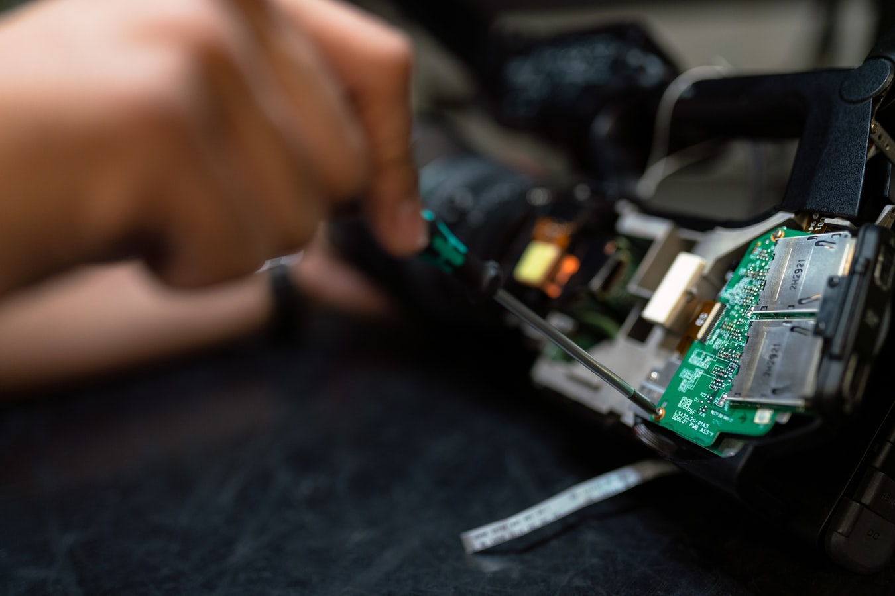

En soporte técnico existen dos acciones que ayudaran a conservar la vida util de tus equipos

Mantenimiento Preventivo
Acciones y métodos para anticiparse a las fallas evitarlas mantener operativo y eficiente un sistema o equipo.

Mantenimiento Correctivo
Acciones y métodos para solucionar las fallas una vez presentadas estas, es la reparación propiamente dicha.